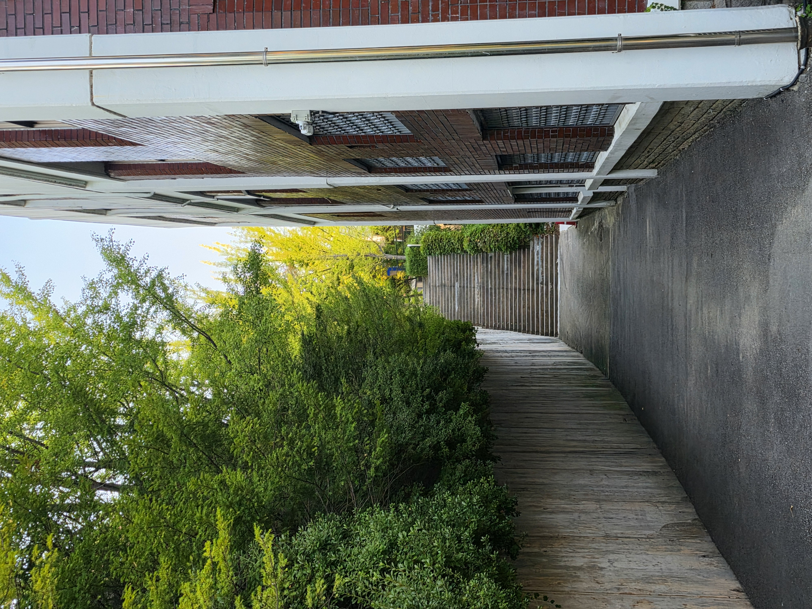

안정감을 느끼는 길
양 옆이 벽과 건물로 막혀있고 사람이 많이 다니지 않아 편합니다.
찾아가는 방법
신데렐라계단을 올라와서 쭉 가다가 오른쪽에 비르투스관 뒤쪽에 위치해 있습니다.
여기에서 해볼 것
- 길에 진입하기 전 광장에서부터 천천히 걸어와보기
- 돌계단이 깨진 곳이 있어 오를 때 조심하기
사람이 많이 다니지 않아 편한 길

양 옆이 벽과 건물로 막혀있고 사람이 많이 다니지 않아 편합니다.
신데렐라계단을 올라와서 쭉 가다가 오른쪽에 비르투스관 뒤쪽에 위치해 있습니다.